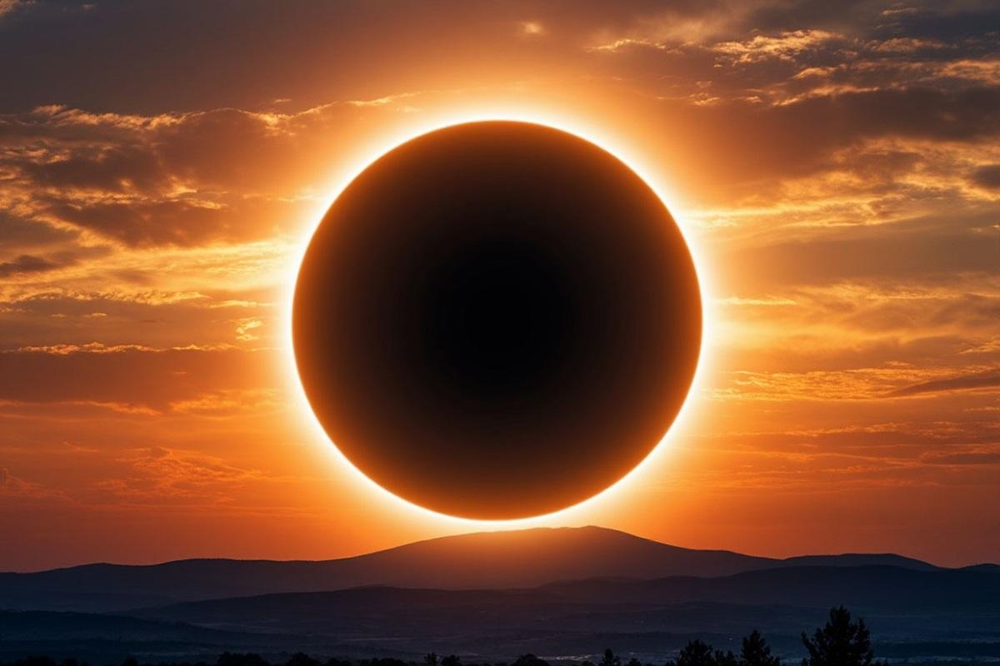
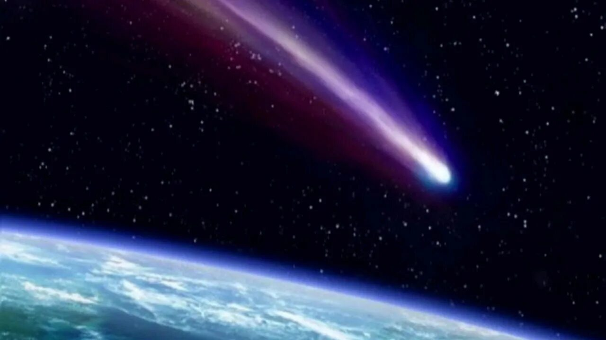
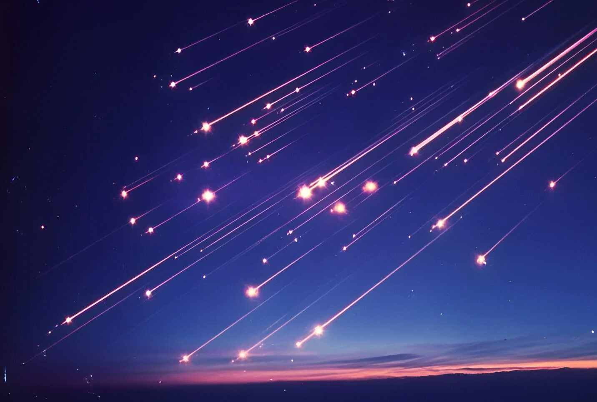
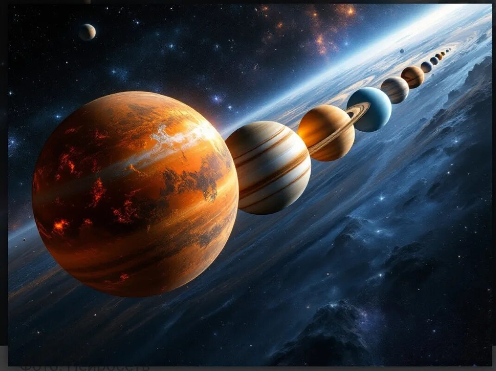
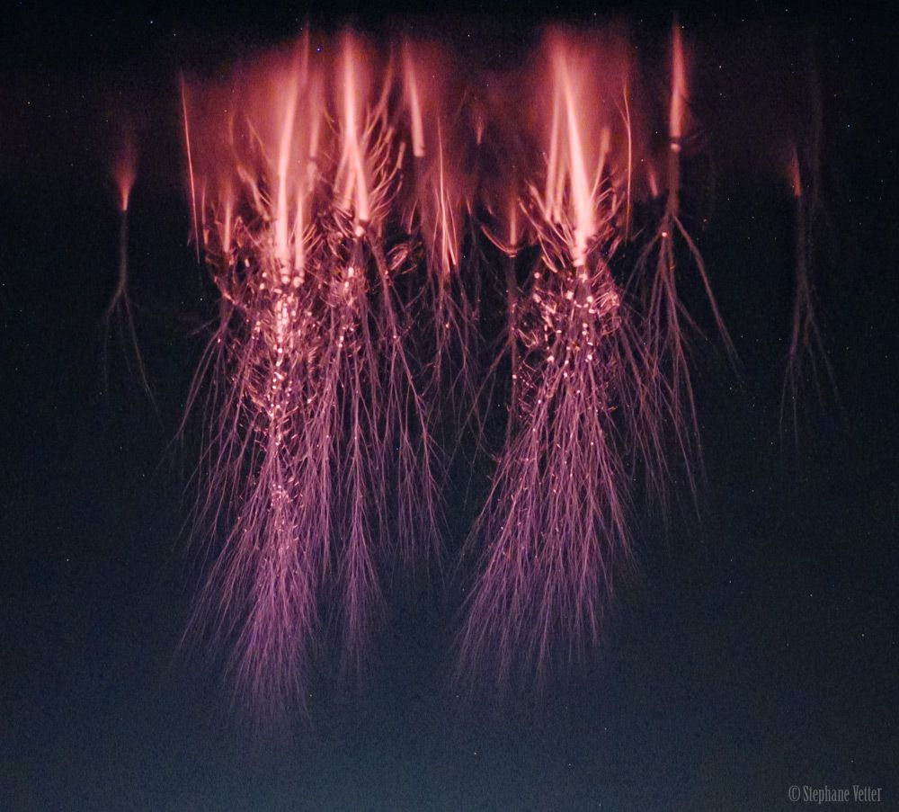

Не пропустите чудо на небе
Редкие небесные явления — это проект, который помогает обычным людям увидеть то, что происходит раз в годы или десятилетия. Календарь с QR-кодами + сайт-справочник: сканируйте, читайте инструкции и наблюдайте.
Смотреть все явления →Что вас ждёт в этом году?

Затмения
Солнечные и лунные затмения — одни из самых впечатляющих небесных спектаклей.

Кометы
Яркие кометы с длинными хвостами появляются раз в несколько лет.

Звездопады
Метеорные потоки дарят десятки "падающих звёзд" в час.

Парады планет
Несколько планет выстраиваются в одну линию на вечернем небе.

Спрайты
Редчайшие электрические разряды над грозами.
Как пользоваться календарём?
- Посмотрите на календарь — найдите значок ★ рядом с датой события.
- Отсканируйте QR-код под нужным месяцем камерой телефона.
- Вы перейдёте на страницу этого месяца с подробной инструкцией.
- Узнайте точное время, куда смотреть и нужен ли бинокль.
- Выйдите на улицу за 15–20 минут до события и наблюдайте!
📅 Где взять календарь?
Скачать печатную версию календаря (обе версии: 6 листов или постер на год) и инструкцию можно на специальной странице.